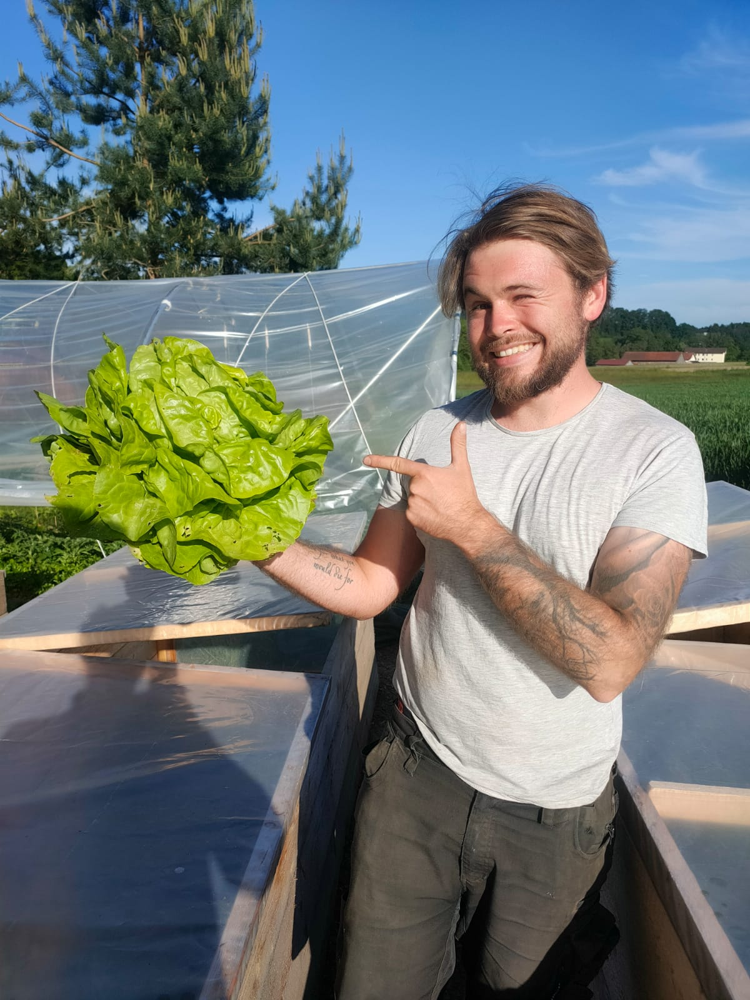

- Gesundes Essen aus der Region
- 40 verschiedene Sorten
- Unbehandelt und lecker
-

Simon
Im Gemüsegaten meiner Oma packte mich schon im Kindesalter die Faszination für die Natur. Jahre später blühte diese Faszination dann erst vollends auf. Und durch die Gründung der Solawi kann ich nun mein eigenes hochwertiges und gesundes Gemüse an andere Menschen weitergeben und sie somit an meiner Faszination teilhaben lassen.
-
Robert
Im Sommer 2020 führte mich mein Weg in das schöne Niederbayern in die Gemeinde Triftern, wo ich mittlerweile mit meiner jungen Familie gut angekommen bin. Mit dem Leben hier in der Region begann auch die Arbeit mit Gemüse und Kräutern, kurz darauf wurde die GbR Donnerwurz’n gegründet. Ich genieße die Arbeit auf dem Feld und freue mich über meinen aktiven Beitrag zur Gestaltung einer nachhaltigen Umgebung.
Zusammen bieten wir privaten Haushalten endlich die Möglichkeit ihr Gemüse aus unmittelbarer Umgebung zu beziehen.
- Frisch und Abwechslungsreich
- Aus nachhaltiger Bewirtschaftung
- Zur Unterstützung der Natur und Heimat